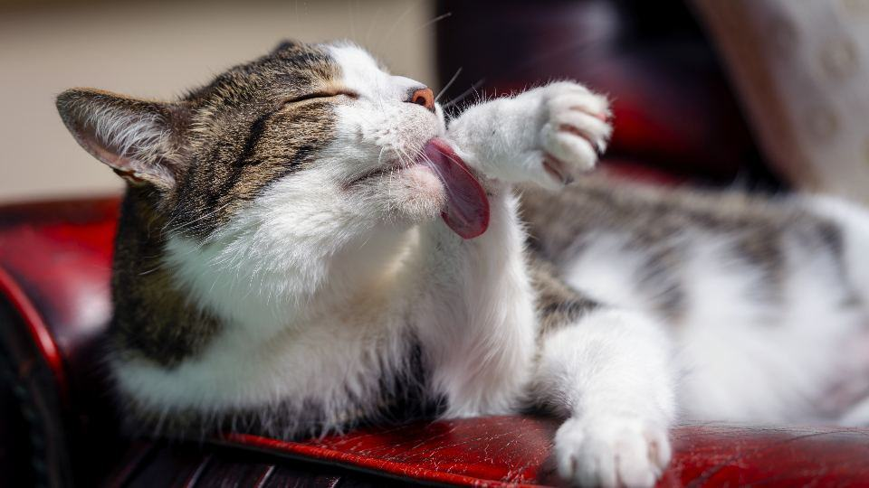
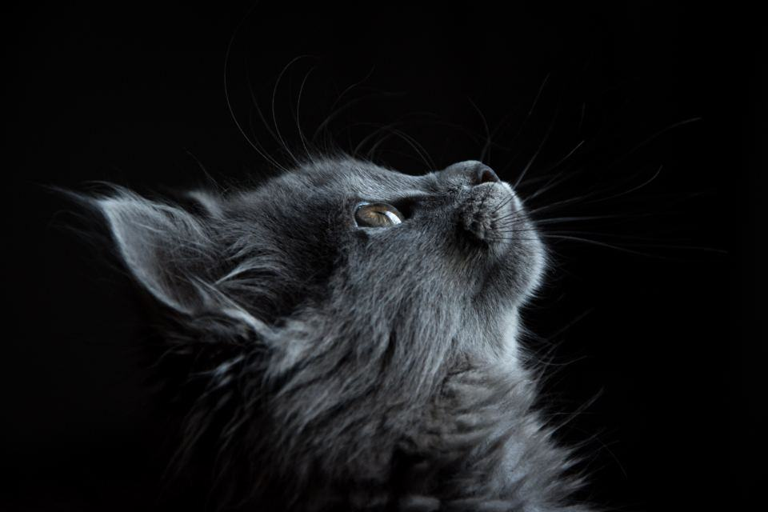
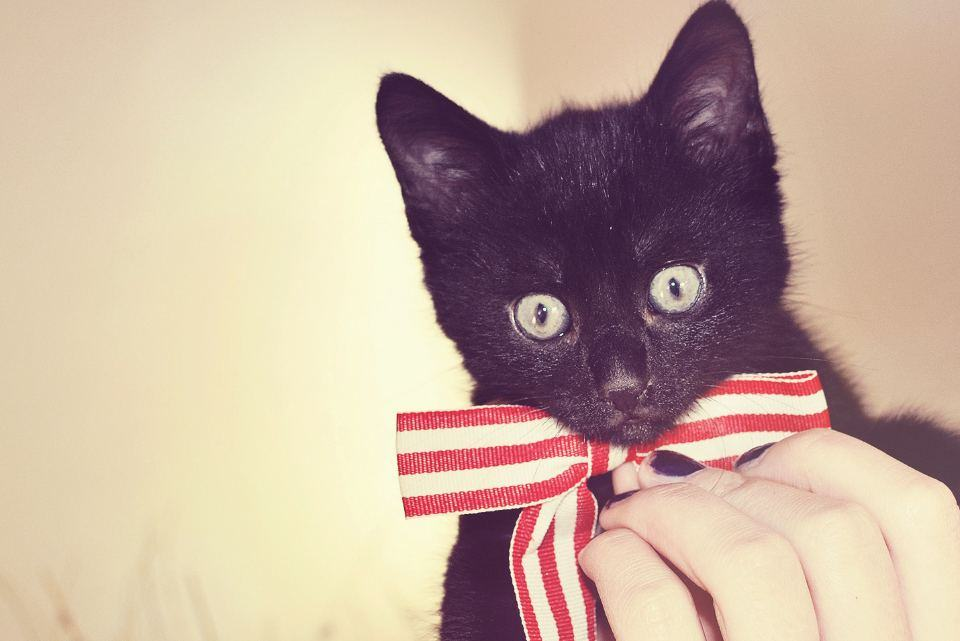

Före & efter
Katter vi har behandlat hemma hos sina ägare.
- 2026

Morris
Filten på magen bort på två besök – i samma badkar som han brukar sova i.
- 2026

Sigrid
Kortare päls bak och en katt som kunde tvätta sig själv igen.
- 2025

Kungen och Prinsen
Bröderna badades i tur och ordning medan den andra tittade på från hatthyllan.
- 2025

Lakrits
Hade rivit sönder soffan – nu klipps klorna var femte vecka i samma soffa.
- 2026

Kull F hos katteri Vinterek
Fem kattungar och mamman fönade och klara inför utställningen i Uppsala.
- 2025

Gnistan
En halv kasse underull efter vårfällningen, borstad på köksgolvet.


Kattägare som slapp buren
Annika F. · Gävle”Morris har sövts två gånger för tovor. Nu kommer Josefin hem och han ligger kvar i badkaret.”
Tomas och Leila · Valbo”Vi har fyra katter och ingen bil. Att de kom hem till oss löste allt.”
Vanja K. · Tierp”Samir badade hela kullen hemma hos oss dagen före utställningen. Ingen kattunge åkte bil i onödan.”